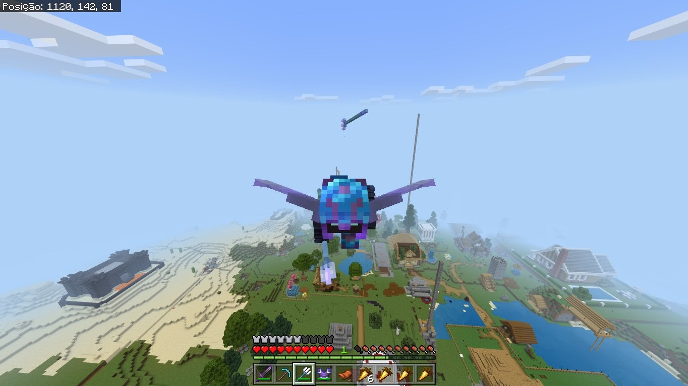

Eu me chamo Gustavo Bicalhos, Tenho 16 anos e estudo no São Pedro Apóstolo.
Gosto bastante de jogos online e também individuais.
Ultimamente, tenho jogado bastante Minecraft em um servidor com meus amigos...
Me interesso Bastante pelas disciplinas de exatas, como física, cálculo, etc...
Imagem de eu sendo seguido por um tridente:
Como fazer isso?